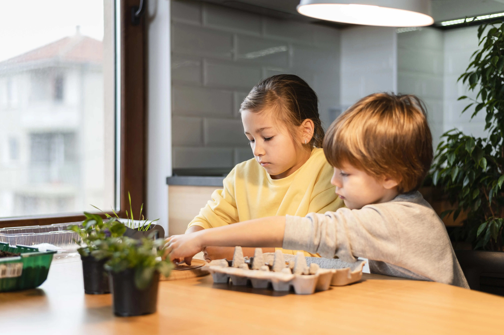

Education
Access to local schools, study routines and educational support.
Our home
Our residential home has been arranged to feel calm, safe and genuinely welcoming, with spaces for privacy, routine, connection and emotional regulation.
Inside the home
Our home accommodates up to three young people at a time, ensuring every child receives individualised attention without the overwhelm of a larger group setting.
Community
The home is located with access to transport, schools, GP services, dental care, opticians, parks, leisure facilities, libraries, places of worship and youth organisations.
Access to local schools, study routines and educational support.
Registration with GP, dental and optician services on admission.
Children are supported to build community, friendships and positive routines.
Identity
We actively support each young person's cultural, religious and personal identity as part of everyday life at Animate Care.

Safety
Clear plans for each child and the shared home environment.
Procedures, checks and routines that protect children and staff.
Digital boundaries and support for safe online behaviour.
Safer recruitment and fully checked staff before working with children.
Animate Care accommodates up to three young people at a time.
Yes. Each child has a private en-suite bedroom designed for comfort, privacy and personal expression.
Yes. The sensory room supports emotional regulation and therapeutic care.
Yes. Children can access education, healthcare, transport, parks, cultural venues and community activities.
Next steps
The physical home is only one part of the placement. These pages explain the support around each child and how to talk to us about suitability.